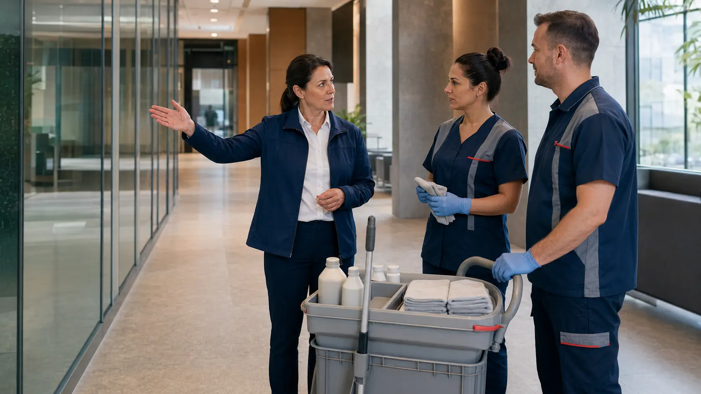

Varias instalaciones
Quiere un único proveedor para varias ubicaciones y un único estándar.
Limpieza de instalaciones de oficinas, comerciales, logísticas, hoteleras e industriales con un calendario claro y control de calidad.

En limpieza, Equss asume la limpieza de las instalaciones según el estándar y el calendario acordados, organiza un equipo con supervisión e informa de la ejecución; la facturación suele ser por metro, por instalación o por periodo.
Quiere un único proveedor para varias ubicaciones y un único estándar.
Las instalaciones funcionan las 24 horas y requieren dotación en distintos turnos.
Necesita auditorías, listas de comprobación y un informe de ejecución.
Unas instalaciones nuevas o un cambio de proveedor exigen una asunción ágil.
Entrada, tareas, resultado, limitaciones y requisitos de prevención de riesgos laborales.
Funciones, recursos, KPI, reparto de responsabilidades y modelo de facturación.
Arranque controlado en una parte acordada del proceso.
Ajustes de la organización, del estándar de trabajo y de los informes.
Ampliación del volumen tras la recepción del piloto.
Las respuestas van antes del formulario para que el alcance quede claro antes del contacto.
Podemos, si así se acuerda en la oferta. El alcance de materiales y equipos se incluye en el contrato.
Con listas de comprobación, auditorías del supervisor e informe de ejecución. Los criterios de recepción se fijan al inicio.
Sí, tras evaluar los riesgos, los requisitos de prevención de riesgos laborales y las habilitaciones necesarias en las instalaciones concretas.
Prepararemos una recomendación sobre el alcance, el modelo de facturación y un calendario realista.